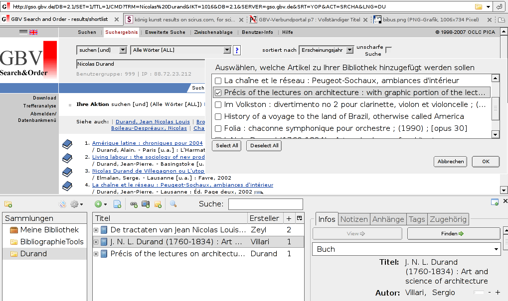
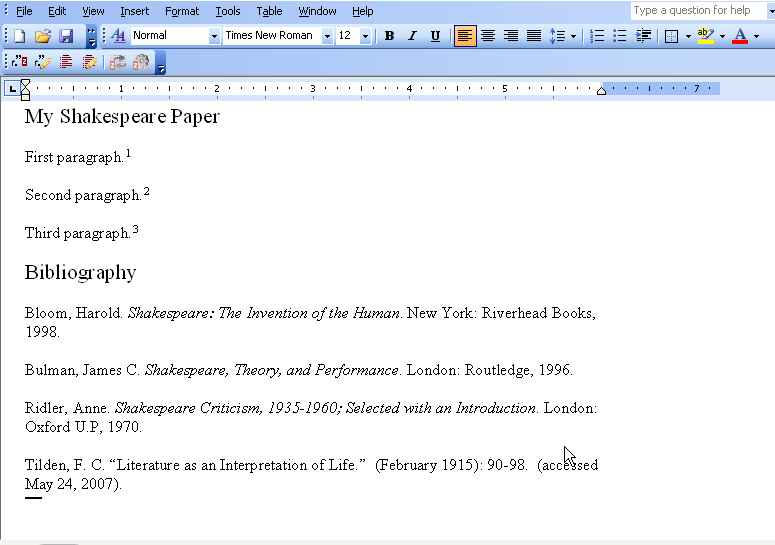
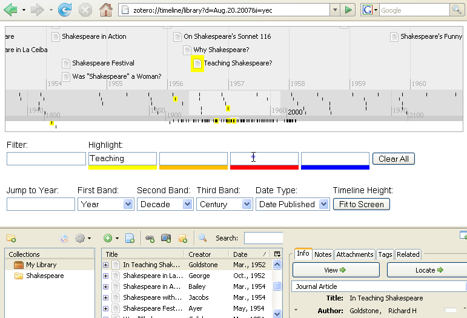
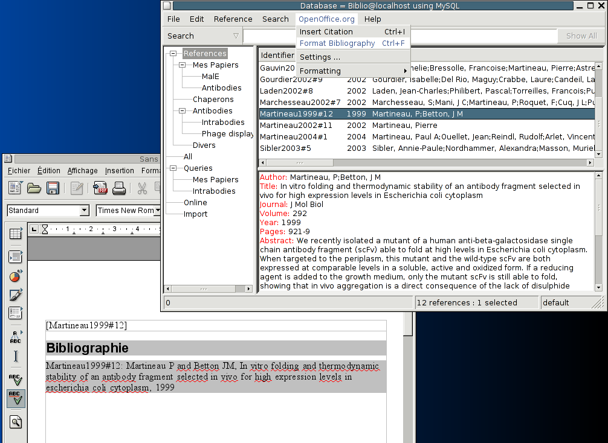
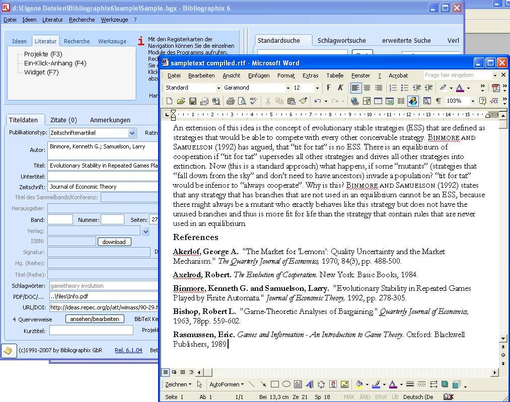

| Title: | Bibliographie Verwaltung: zotero, bibus bibliographix |
| Author: | Joscha Krutzki <joka@jokasis.de> |
| Date: | 2007/12/5 |
Verwaltung vieler Einträge
Abtippen
Formatieren
zotero: http://www.zotero.org/
opensource Firefox Plugin: Windows, Mac, Linux
bibus: http://bibus-biblio.sourceforge.net
opensource: Windows, Linux
bibliographix: http://bibliographix.com
kommerziell: Windows
Verwaltung von Metadaten von Webseiten und Dateien
Erkennt: Bibliographie, Bilder, Webseiten, Dateien, Wordpress/Blogs
Navigation: search, tagging, related content, timeline
Word und Openoffice Unterstützung



Amerika/England weit verbreitet:
jstor, siteseer, sicurs, Google, Flickr, ...
Europa bisher wenig:
http://gbv.de (Nordeutschland/SMPK Bibliotheken, online-fernleihe, subito)
Schweizer Bibliotheksverbund
FU-Berlin Bibliotheksportal nur teilweise:
Speichern in Korb - Meine Ressourcen - Speichern/Senden - Format: Citation Manager
Exportiert: Titel, Autor, Stichwort (wird zu tag)
OPAC FU-Berlin vollständig:
Markieren - Speichern/Senden - Satzformat: Citation Manager (RIS)
Uni Freiburg
leicht bedienbar
innovative Weiterentwicklung
sehr praktisch für Recherchen im Internet
momentan wenig Zitierformate
kein Editor für eigene Zitierformate
kein Editor Zugriff direkt auf Metadata Datenbank
möglich z.B. mit Openoffice oder Access
momentan openoffice plugin(1.0b) unter Linux (Openoffice 2.3.1) fehlerhaft
opensource Bibliographie Verwaltung
Windows, Linux
Openoffice und Word Unterstützung

opensource
Editor für eigene Zitiervorlagen
viele Features für Bibliographieverwaltung
gute Unterstützung für Openoffice, insbesondere bei große Dateien
komplizierte / fehlerhafte Installation
Getestet mit Windows XP, Debian unstable, Debian etch und Openoffice 2.3.1
Neue Version 1.4rc1 besser
momentan kein Windows Installer für 1.4rc1
Word Unterstützung langsam
ähnlich wie Endnote
Zugriff auf Online Datenbanken
mindmap tool
Openoffice und Word Unterstützung
nur wenig Einschränkungen:
kein Export
kein komplexe Suche
begrenzt Zugriff Online Datenbanken

-